Current Estimation Modes
You can control how create wire estimates the current in the edited pathSeg and via. The following current estimation modes are available: Auto, Sum Connected Pins Currents, Maintain Constant Current, Nearest Island Current. These are described as follows:
Environment variable: weSdrCurrentEstimationMode
Using Auto Current Estimation Mode
Estimates the current automatically in the last section of the wire according to the connected objects and flightline targets. Lets see how the difference in the result of current estimation c using the Create Wire and Create Stranded Wire commands.
-
Current Estimation Using the Create Wire Command
Calculates the current based on all the connected target pins identified in the channel separating two rows of instances ornmosandpmosdevices.
When entering a channel, the flightlines are displayed to show all the identified targets in the channel. The current estimation is based on the sum of all targets, for example,706uA = 4 * 177uA, assuming the wire is routed only until the last target and then restart the routing from the bend. The following figure shows how the wire width is adjusted when the current estimation mode is Automatically estimate current and the checker mode is Enforce. The pins used to estimate the current and wire size are highlighted in yellow (current contributors).
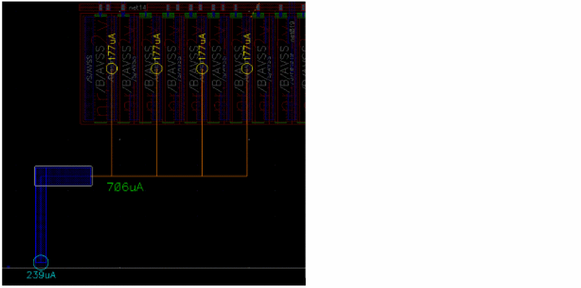When passing through the last target of the channel, the current estimation is based on the sum of all connected pins, for example,945uA = 4 * 177uA + 239uA. The wire transfers all the current attached to the wire to the right.
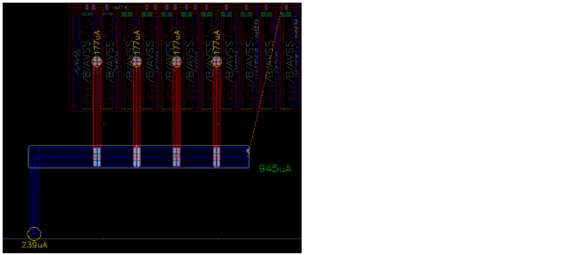Similarly, the following figure shows the adjustment of the wire width when the checker mode is selected as Notify. The 945uA label is red to indicate that the wire is undersized compared to the estimated current.
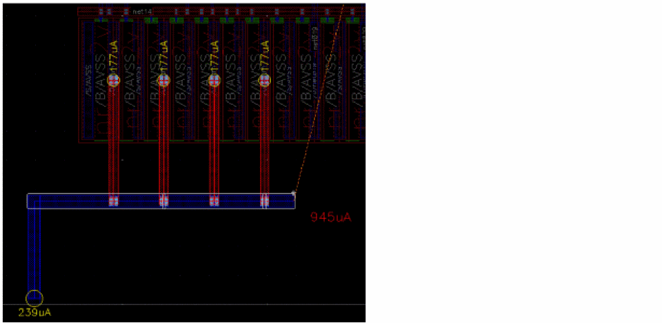 -
Current Estimation Using the Create Stranded Wire Command
Calculates the current based on all the connected target pins identified in the channel separating two rows of instances. When entering a channel, the flightlines are displayed to show all the identified targets in the channel. The current estimation is based on the sum of all targets, for example,300uA = 2 * 150uA, assuming the wire is routed only until the last target and then restart the routing from the bend.
The following figure shows how the number of stranded wires is adjusted when the current estimation mode is specified as Auto and the checker mode is Enforce. The pins that are used for current estimation and for adjusting the number of strands are highlighted in yellow (current contributors).
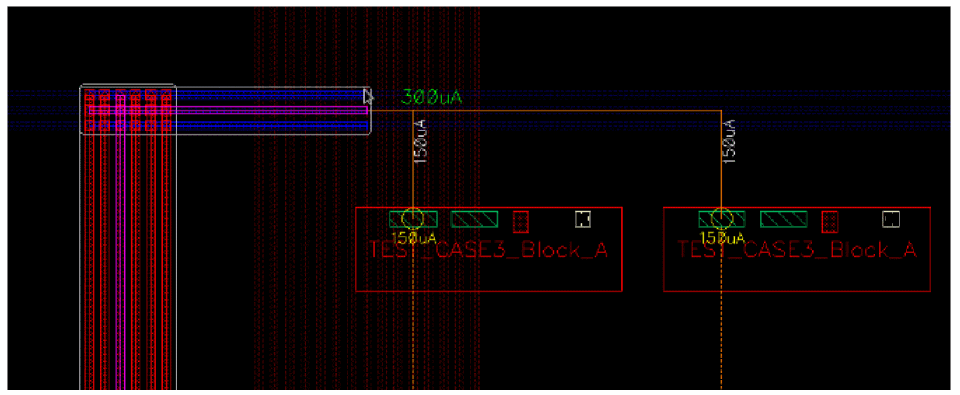
Using Sum Connected Pins Currents Estimation Mode
Estimates the current after adding the current of all the connected pins. Lets see how the difference in the result of current estimation c using the Create Wire and Create Stranded Wire commands.
-
Current Estimation Using the Create Wire Command
Keeps the wire width based on the estimated current of all the pins already connected to the wire. The current at the end of the last segment is the sum of the current for all connected pins. For example,768uA = 239uA + 3 * 177uA. The following figure shows how the wire width is adjusted when the current estimation mode is Sum connected pins current and the checker mode is Enforce. The pins used to estimate the current and wire size are highlighted in yellow (current contributors).
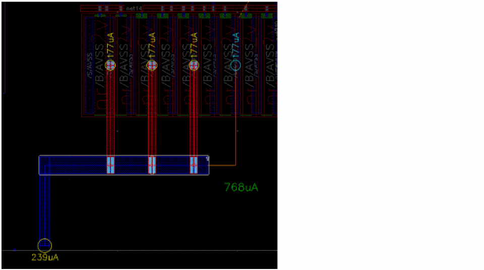Similarly, the following figure shows the adjustment of the wire width when the checker mode is selected as Notify. The 768uA label is red to indicate that the wire is undersized compared to the estimated current.
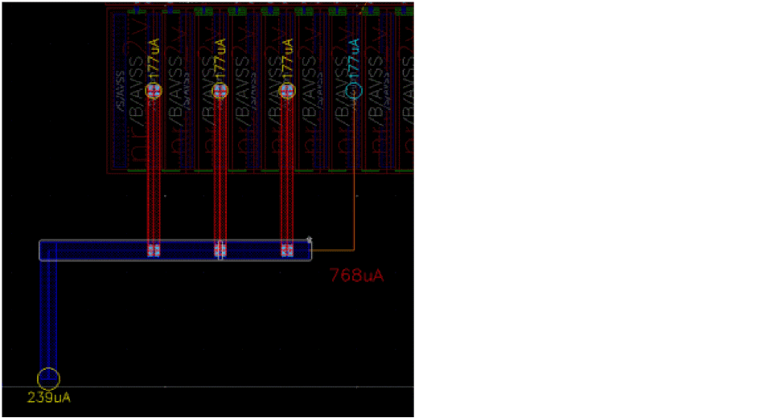 -
Current Estimation Using the Create Stranded Wire Command
Keeps the number of stranded wires based on the estimated current of all the pins already connected to the wire. The current at the end of the last segment is the sum of current for all the connected pins. For example,650uA,if there is only one pin producing650uAof current connected to the wire.
The following figure shows how the number of stranded wires is adjusted when the current estimation mode is Sum Connected Pins Current and the checker mode is Enforce. The pins used to estimate the current and the number of stranded wires are highlighted in yellow (current contributors).
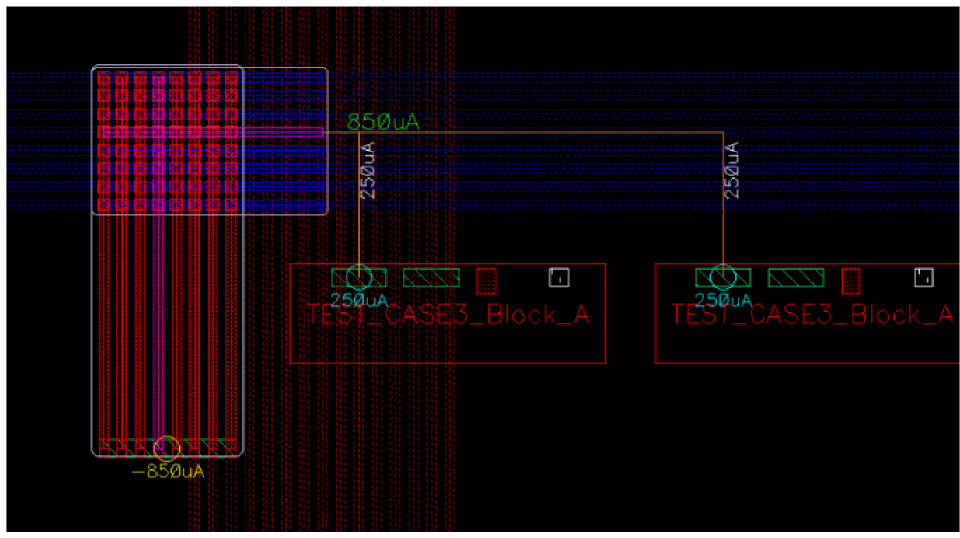
Using Maintain Constant Current Estimation Mode
Estimates the current after inheriting the current from the previous wire. Lets see the difference in the result of current estimation using the Create Wire and Create Stranded Wire commands.
-
Current Estimation Using the Create Wire Command
Adjusts the wire width based on the current of the previous segment. The vertical pathSeg is created with the current of the connected pin. Therefore, the width of the pathSeg is adjusted for239uA. The horizontal pathSeg is also adjusted to maintain the same current as the vertical pathSeg, which is239uA. The following figure shows how the wire width is adjusted when the current estimation mode is Maintain Constant Current and the checker mode is Enforce.
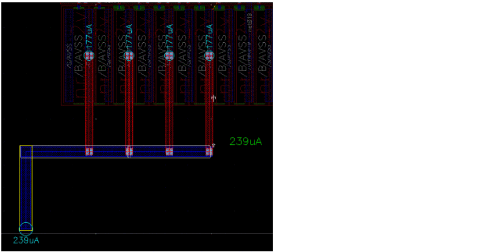Similarly, the following figure shows the adjustment of the wire width when the checker mode is selected as Notify.
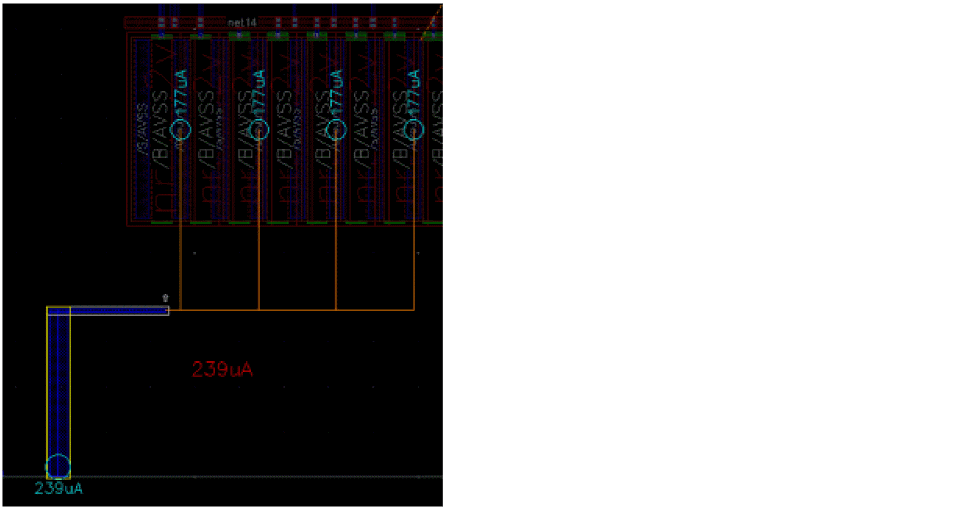 -
Current Estimation Using the Create Stranded Wire Command
Adjusts the number of stranded wires based on the current of the previous segments. The following figure shows how the number of stranded wires is adjusted when the current estimation mode is Maintain Constant Current and the checker mode is Enforce. The vertical stranded wires in red gets created for a current of715uA.Thus, the stranded wires in blue are adjusted for the same amount of current, which is715uA.
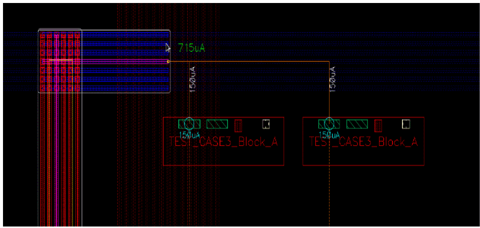
Using Nearest Island Current Estimation Mode
Estimates the current based on all the pins connected by the flightline. Lets see the difference in the result of current estimation using the Create Wire and Create Stranded Wire commands.
-
Current Estimation Using the Create Wire Command
Current of the closest pin is considered to estimate the width of the wire. The following figure shows how the wire width is adjusted when the current estimation mode is Nearest Island Current and the checker mode is Enforce.
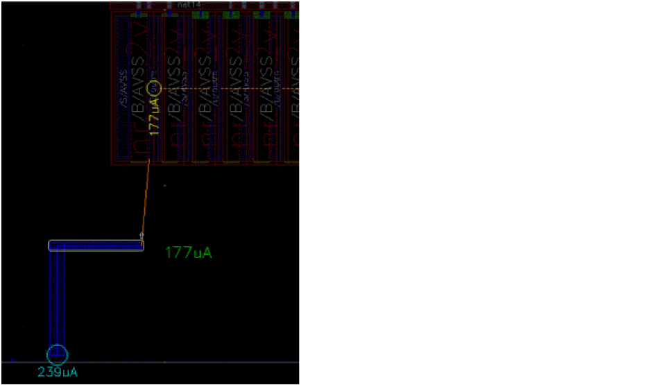Similarly, the following figure shows the adjustment of the wire width when the checker mode is selected as Notify. The blue label indicates that the last wire segment is oversized compared to the target current (177uA).
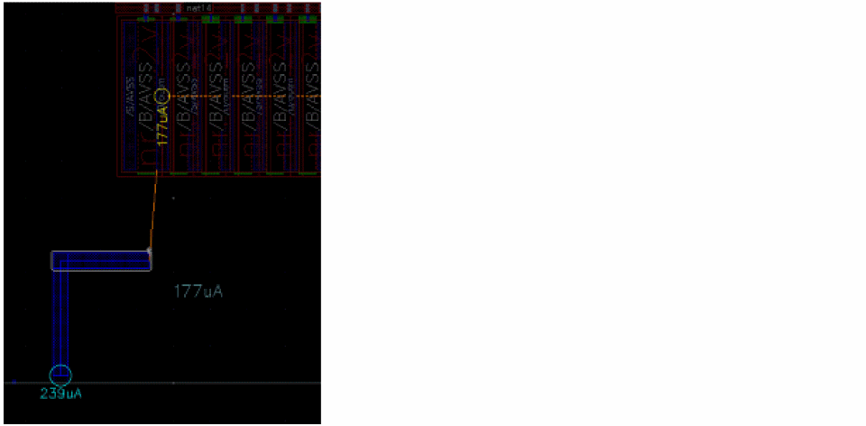The following figure shows the wire width and the routing when the checker mode is selected as Off.
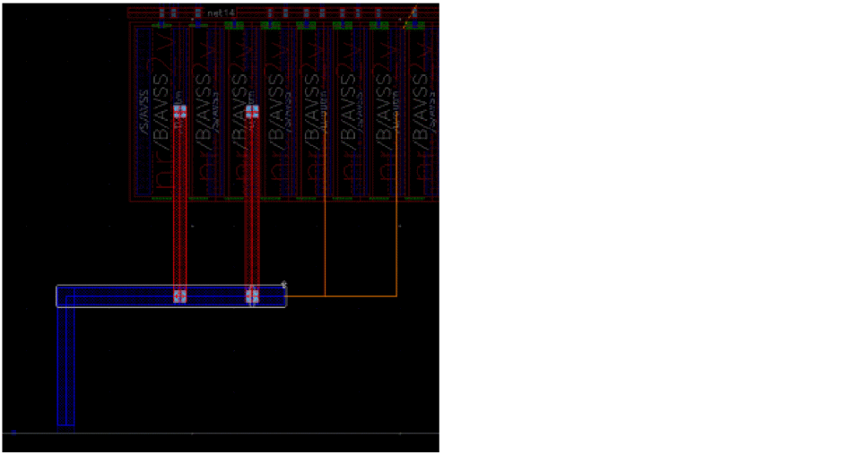 -
Current Estimation Using the Create Stranded Wire Command
Calculates the number of stranded wires based on the current of the closest pin. The following figure shows how the number of stranded wires is adjusted when the current estimation mode is Nearest Island Current and the checker mode is Enforce, and the wire is targeting one pin at150uA.
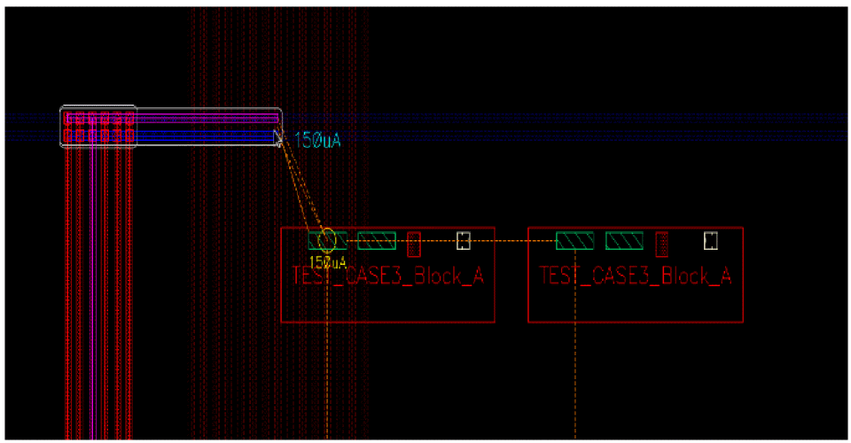
Related Topics
- Running Interactive SDR Current Density Checks
- Running an Interactive SDR Maximum Resistance Check
- Connecting Twigs Automatically
Return to top